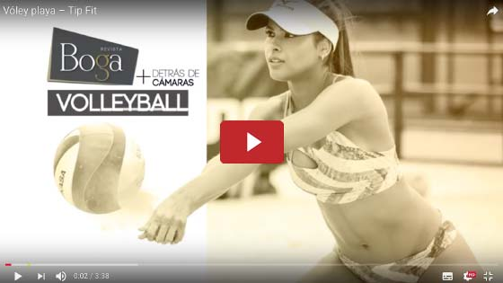

Vóley Playa
Con el apoyo del IDRD y Stock models
Vestidos de baño Guadalupe
Instagram: @GuadalupeUnderwear
Indumentaria deportiva Mizuno
www.beyondeportes.com
El deporte para formar un cuerpo delicado
Sí. Son muchos claro está, pero en las olimpiadas pasadas uno de los deportes que más disfrutaron los hombres fue el voleibol de playa, más por los esculturales cuerpos de sus deportistas que realmente porque sean conocedores de la técnica.
Los muslos tonificados, los gemelos duros como una roca, las nalgas paradas, el abdomen plano y “rayado” y el brazo sin la famosa ala de chulo, son las características de las voleibolistas. Pero eso sí, se debe dejar algo claro, la disciplina y el sacrificio son enormes.
3 horas practicando en la arena y 2 horas en el gimnasio fortaleciendo los músculos y los huesos, hacen parte de una rutina a portas de una competencia, eso sin contar con la alimentación restringida que deben tener.
A ciencia cierta, a la gran mayoría de mujeres nos encantaría tener esos cuerpos, lo complicado llega cuando sirven en la mesa familiar esa deliciosa gaseosa, o el famoso postre de la tía. Oh por Dios, esas cosas tan deliciosas que nos alejan poco a poco de un cuerpo sin una gota de grasa y solo fibra muscular.
{kind=link}
{kind=link}
{kind=link}
{kind=link}
Y si las voleibolistas no están a punto de una competencia, el día de entrenamiento se divide en 2 horas en la arena y 1 hora y media de gimnasio, las pesas son las perfectas para romper el músculo y con la comida adecuada, en especial proteína vegetal, hacen que el músculo crezca. Si queremos practicar esta rutina y deseamos una cola levantada y redonda, lo podemos lograr con ejercicio y alimentación balanceada, pero si la vida la premió con buena nalga, solo debe tonificarla.
Las cuclillas son la madre del deporte, como dicen muchos entrenadores y trabajar los glúteos, aductores, los gemelos y femorales, ayudarán a que en algún momento logremos salir a la calle a trotar con el cuerpo más tonificado que nunca.
Para el entrenador Mario Rojas, más que el ejercicio físico, las ganas y el deseo de ser un excelente competidor hacen que las 5 o 6 horas de entrenamiento valgan la pena. Y por ello hace una invitación especial a todos aquellos que quieran probar sus habilidades deportivas y lograr ser parte de la Liga de Voleibol de Bogotá, apoyada por el IDRD, quien quita que sea usted una de las próximas duplas que representen al país en unas olimpiadas.
Laura Hernández y Esperanza Gómez son dos de las voleibolistas más destacadas de la ciudad y fueron ellas quienes nos contaron (porque no quisieron salir en la foto) un poco sobre este maravilloso deporte y les enseñaron lo básico a las modelos Sofía Cuello y Mariana González de la agencia Stock Models para que confirmaran que cualquier persona de cualquier edad pueda practicar voleibol de playa, sin restricción ni discriminación.
Ahora bien. Llegó la hora de demostrar esos atributos deportivos y arregle con su médico una dieta especial para que nos veamos en las próximas olimpiadas.
